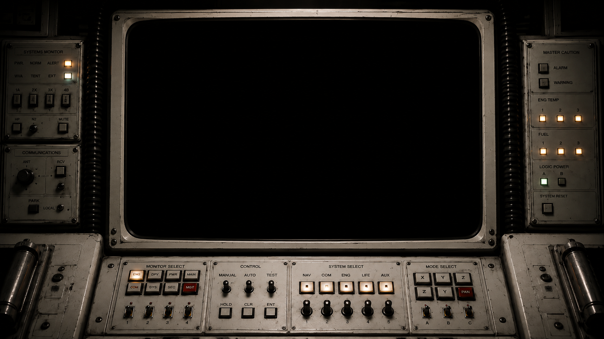

OrionOS
█████ ██████ ███ █████ ██ ██
██ ██ ██ ██ ███ ██ ██ ███ ██
██ ██ ██████ ███ ██ ██ ████ ██
██ ██ ██ ██ ███ ██ ██ ██ ████
█████ ██ ██ ███ █████ ██ ██
▒▒▒ O S ▒▒▒
SHIPBOARD KERNEL 3.3.0 · DEEP RANGE BUILD 33X
BOOT LOADING
0%
MOUNTING KRNL33X.IMG · O.S.S. ORION
ORION-OS
SHIPBOARD KERNEL 3.3.0 · DEEP RANGE BUILD 33X · O.S.S. ORION
ORION INDUSTRIES © 2991–3033 · UNAUTHORIZED ACCESS PROHIBITED
PWR
▓▓▓▓▓
O2
▓▓▓▓░
GRAV
▓▓▓░░
SIG
▓░░░░
ENTER — SKIP · R — REPLAY